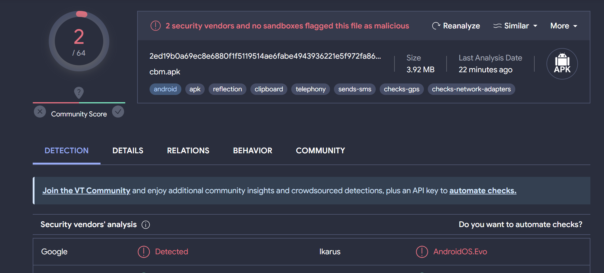
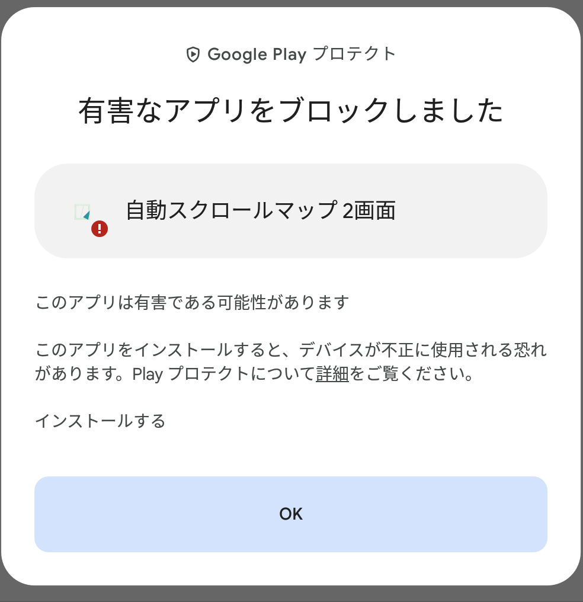

更新日時:2024/02/24 23:44
最終更新:2024/03/01 19:00
どうしようもなくなってしまったので、ここに書くことにしました。
どんなアプリを作っても、ウイルス誤検知が止まりません!!!!なんででしょう!?
インターネット通信権限を持たないアプリを作っても、権限を一切必要としないアプリを作っても、なぜかイカロスとGoogleのウイルスチェックに引っ掛かり、一般公開を阻止されてます(めちゃくちゃ安全に作っているのに...)。署名情報を変えても、パッケージ名を変えても、何をやってもダメダメです(泣)このままだとアプリが作れなくなってしまいます....
自動スクロールマップ二画面というアプリ(過去作品)がありますが、GooglePlayプロテクトになぜか有害と誤検知を受けてから、何を作っても引っ掛かります。最近アプリの公開数が激減しているのはそのためなんです...でも、何とか頑張って解決させようと思っています!なのですが.......
一部の過去のアプリを再検査したところ、またGoogleとイカロスが... .....無理です!私には解決できませんっ!I cannot get around to this problem!(突然の英語。)
...そこで、新しい対応を考えました! サイトに"ゴミ箱"を設置することにしました! そのごみ箱の中に当該のアプリを入れてサポート無し(ジャンク品的)で配布することにしました。アプリサイト(Cafe)には掲載せず、そのようなアプリはすべてゴミ箱に入れて配布します!
以上です!読んでくれてありがとう!
©︎2024 横茶横葉 All Rights Reserved.